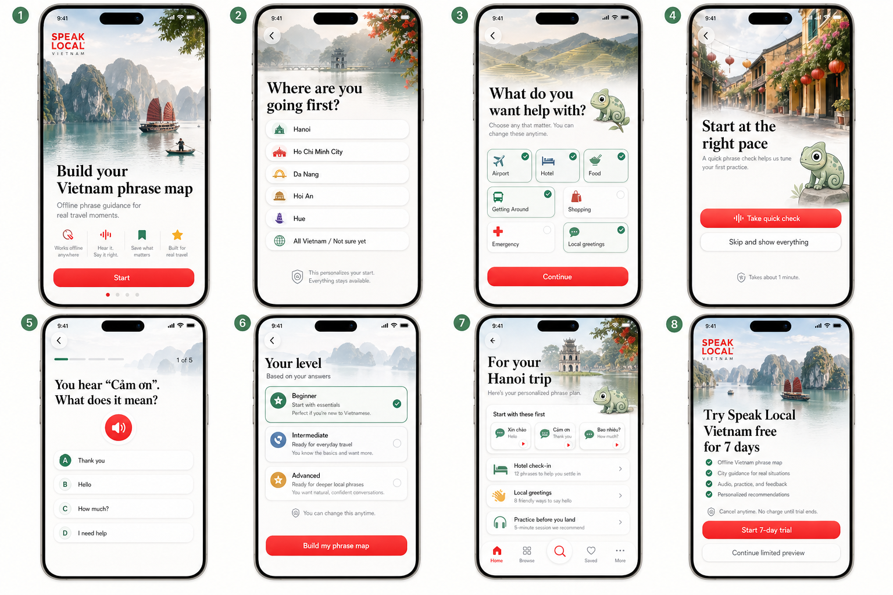
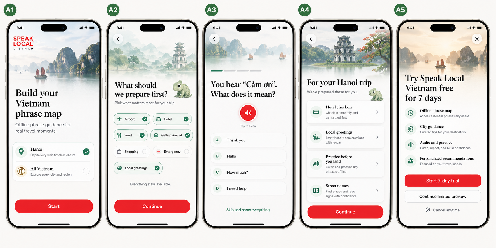
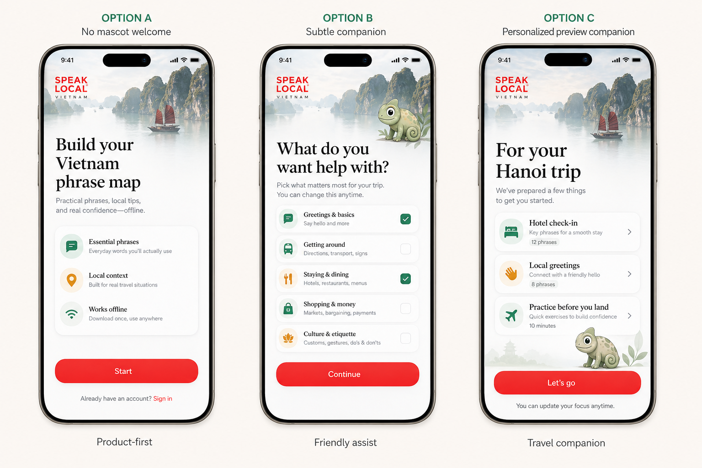

SpeakLocal Vietnam Onboarding Storyboards
High-fidelity image-only first-run concepts for welcome, personalization, phrase placement, prepared Home preview, and the 7-day trial moment.
Main 8-Screen Flow
Complete first-run path from promise through personalization, quick phrase check, preview, and 7-day trial.

Welcome
Establishes the phrase map promise with a calm Vietnam visual and a single Start action.
Destination
Personalizes the first city while reassuring travelers that every phrase remains available.
Interests
Lets users pick practical help areas without turning onboarding into a long survey.
Quick Check Intro
Frames placement as pacing help and keeps the skip path visible.
Phrase Question
Uses audio and a real Vietnamese phrase so it already feels like learning.
Level Result
Shows Beginner, Intermediate, and Advanced as adjustable starting points.
Prepared Preview
Shows the app has prepared useful Hanoi content before the trial screen appears.
Trial
Keeps the 7-day trial classy and native, with Continue limited preview as the secondary path.
Compact Alternate
A five-screen version that reduces setup friction by combining destination setup and trimming the level-result step.

Melo Placement Options
Three ways to handle the chameleon: product-first with no mascot, subtle helper, or travel companion in the prepared preview.

Report Notes
- The main 8-screen flow is the stronger product story because it earns the trial ask with a prepared preview.
- The compact alternate is better if first-run completion rate becomes the top concern, but it explains less.
- Melo works best on interests and preview screens. It should stay off the paywall or remain tiny.
- The placement check must stay phrase-based, audio-led, and skippable so it feels helpful rather than evaluative.